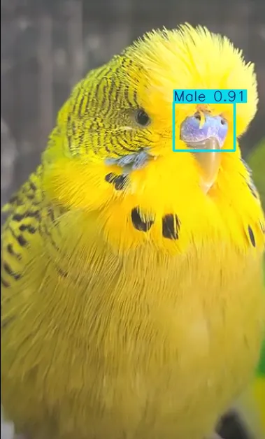
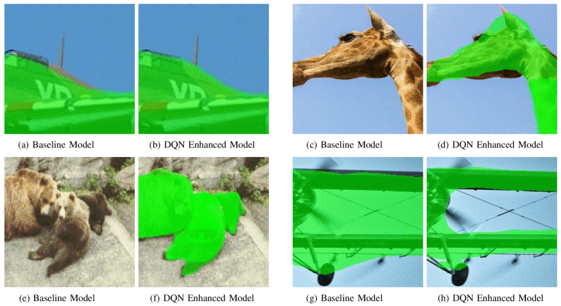

Computer Vision
Visual recognition systems for images and video, including object detection, segmentation, classification, custom dataset preparation, and model evaluation.
Computer Vision | Applied ML | Data Products
A data scientist and applied AI researcher with an MSc in Computer Science.
Develops machine learning solutions that transform raw data into models and applications for prediction, process automation, visual understanding, and decision making.
Published research focuses on computer vision and reinforcement learning. The work involves turning messy images, text, tables, and behavioral data into usable models for real applications.
Applied AI work across computer vision, automation, credit risk, recommendation systems, and academic research.
Visual recognition systems for images and video, including object detection, segmentation, classification, custom dataset preparation, and model evaluation.
Search systems, recommendation engines, scoring models, dashboards, and decision workflows built around real user needs.
Extract, validate, and structure information from documents, images, forms, and complex digital processes.
Machine learning and computer vision research with academic publications
American Sign Language detection built with YOLO and deployed across Hugging Face and Android surfaces.
Computer vision work for identifying budgerigar gender through cere detection and model comparison.
AI car search for the Turkish used car market using Qwen3, browser inference, and arabam.com crawling.
Credit risk estimation with non financial features and a privacy preserving synthetic Istanbul dataset.
Data insight notebook for Istanbul Metropolitan Municipality scholarship aid data.
Reinforcement learning baseline project for Doom with VizDoom and Stable Baselines 3.
Interactive Tableau dashboard for comparing national currency values against the US dollar.
Automation pipeline for solving captchas on the MERSIS portal using Selenium and Microsoft TrOCR.
Math captcha dataset and generation tooling designed for OCR experiments and captcha model training.
Game metadata dataset prepared for analytics, recommendation, and ranking experiments.
Image classification experiment comparing deep neural networks and convolutional models on CIFAR 10.

Conference paper on object detection and deep learning for budgerigar gender recognition. Published in UBMK 2024 Proceedings.
DOI 10.1109/UBMK63289.2024.10773570
Conference paper applying reinforcement learning to instance segmentation with a Double DQN approach.
DOI 10.1109/ASYU67174.2025.11208352